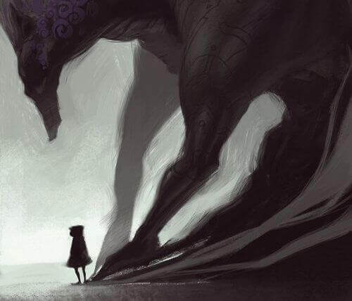

RPG.ch

Contexto.
Você, um jovem aventureiro de um pequeno vilarejo, sempre sonhou em explorar o mundo. Um dia, você encontra um velho viajante que lhe entrega um mapa misterioso, apontando para um lugar chamado "Coração da Terra." O viajante alerta você que a jornada será cheia de desafios e mistérios, mas promete que você descobrirá segredos incríveis se tiver sucesso
Seguir a Aventura?
Começo da aventura
Você foi até a aventura, cheio de expectativas e coragem, mas, ao chegar ao primeiro destino marcado no mapa, percebeu que algo estava errado. As terras que antes eram descritas como exuberantes e cheias de vida estavam agora sombrias e desoladas. A vegetação murcha e os rios secos indicavam que algo terrível havia acontecido.
Explorar o local?
Tem que seguir a aventura!
oh não..
Enquanto explorava o local, você foi confrontado por uma estranha figura encapuzada, que o observava das sombras. A figura revelou que uma força maligna estava drenando a energia vital da terra, ameaçando destruir tudo o que ele conhecia. Para salvar o Coração da Terra, você teria que enfrentar não apenas os perigos físicos da jornada, mas também essa nova ameaça, mais sinistra e poderosa do que ele jamais poderia ter imaginado.
Lutar contra o mosrto?
ufa..
Você enfrentou a figura encapuzada em uma luta intensa. A criatura, ágil e poderosa, atacou com garras afiadas e rajadas de energia sombria. Você, com sua espada, esquivou-se dos ataques, observando os movimentos do inimigo. Após identificar um padrão, ele contra-atacou no momento certo, desferindo um golpe mortal que matou a criatura em sombras.

Com a vitória em mãos, mas com o corpo ferido e a mente cansada, Você soube que essa luta era apenas o começo. A verdadeira batalha, para salvar o Coração da Terra, ainda estava por vir.
Após a batalha, Você encontrou um médico em uma cabana nas montanhas. O médico tratou seus ferimentos e ouviu sua história. Ele ofereceu-se a você em sua missão para salvar o Coração da Terra, prometendo ajudá-lo na próxima etapa da jornada. Revigorado e com um novo aliado.
aceitar a ajuda?
No cume, eles encontraram uma enorme caverna. O chão tremeu quando o monstro emergiu das sombras, uma criatura colossal com olhos flamejantes e uma aura que exalava poder absoluto. Era evidente que esse ser era a fonte de toda a maldade que você havia enfrentado em sua jornada.
A batalha final começou com uma ferocidade inimaginável. O monstro lançou ataques devastadores, e o chão sob os pés de você e do médico se desintegrou. você, com toda a sua coragem e o conhecimento adquirido durante a jornada, lutou bravamente, enquanto o médico usava suas habilidades para manter ambos vivos e encontrar fraquezas no inimigo. Após uma luta árdua e desesperadora, você viu uma oportunidade. Com um salto de fé, ele atacou o ponto vital do monstro, usando todas as suas forças no golpe final. A criatura soltou um rugido ensurdecedor antes de desmoronar em um mar de sombras que rapidamente dissiparam. Com a queda do monstro, o céu se clareou, e a terra começou a se regenerar. A maldição foi quebrada, e o Coração da Terra foi salvo.
Após a derrota do monstro, você e o médico estavam exaustos, mas aliviados. O céu se iluminou e a terra ao redor começou a florescer novamente, sinalizando o fim da escuridão que havia dominado o mundo. De repente, uma luz brilhante surgiu do fundo da caverna, e uma fada etérea apareceu diante deles. Seus cabelos flutuavam como se estivessem em um vento suave, e suas asas cintilavam com cores iridescentes.
a fada falou com uma voz melodiosa, "você derrotou a escuridão e restaurou o equilíbrio do mundo. Como recompensa por sua coragem e determinação, eu lhe concederei uma grande recompensa." Com um gesto mágico, a fada fez com que uma chuva de ouro e joias caísse sobre o cume da montanha. Pilhas de riquezas, incluindo moedas de ouro, gemas preciosas e artefatos antigos, apareceram diante de você e do médico. Era uma fortuna imensa, suficiente para enriquecer qualquer um. "Esta riqueza não é apenas para você, mas também para aqueles que ajudaram e aqueles que precisam. Use-a para criar um futuro melhor para seu povo e para o mundo," disse a fada. você, surpreso e grato, agradeceu à fada por sua generosidade. Ele sabia que a verdadeira recompensa não estava apenas na riqueza material, mas no poder de fazer o bem e melhorar a vida de todos ao seu redor.
Você passou reto
dia de sorte?
Você continuou sua jornada, buscando um lugar seguro para ficar. Enquanto caminhava por uma trilha estreita entre as montanhas, ele avistou uma pequena cabana ao longe, com fumaça saindo pela chaminé. Esperançoso, ele se aproximou e bateu na porta. Um homem idoso, com olhos bondosos e mãos experientes, abriu a porta. "Entre, jovem viajante," disse o homem, era um medico!
*O medico quer fazer parte da sua aventura* quer a ajuda dele?
sem ajuda do medico, você se perde pela montanha
*você morre*